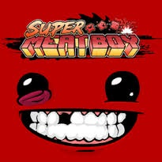
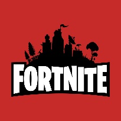

O crossplay foi um plano que as grandes empresas de jogos decidiram implementar para conseguir juntar os jogadores de plataformas diferentes em jogos nos quais existissem o mutiplayer. Foi decidido que apenas o crossplay não era o suficiente para atender essa demanda de união de plataformas no mundo dos jogos. Então pensamos em algo que pudesse definir os jogadores e estabelecer a união entre eles caso fosse requerido, encontramos a solução que seria um perfil mais amplo.
Canal de jogos recomendado: Sidão do Game
Site de jogos recomendado: GameplayRJ
Crie seu perfil! Faça uma breve biografia, escolha uma foto e receba recomendações de jogos!
Temos uma vasta quantidade de jogos para recomendarmos para você, veja se conhece ou se quer conhecer alguns deles!
